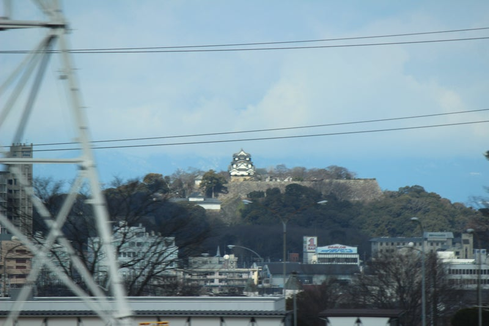

- Secteur
- Maibara → Kyoto
- Côté du siège
- Siège E · à droite vers Kyoto
- Moment
- Environ 116 minutes après le départ de Tokyo en Nozomi
- Durée visible
- Quelques secondesHoraire indicatif en Nozomi ; varie avec la vitesse, la météo et les obstacles.
SON HISTOIRE
Quel château est Hikone ?
Le château de Hikone occupe le mont Hikone, haut d’environ 136 mètres, à Hikone dans la préfecture de Shiga. Ii Naotsugu (Naokatsu), successeur d’Ii Naomasa, en lança la construction en 1604 ; l’essentiel fut achevé vers 1622. Pour les Tokugawa après Sekigahara, sa position face à Kyoto et Osaka était stratégique. Le shogunat hâta les travaux, réutilisant même bois et pierres de Sawayama, Otsu, Nagahama et Odani. La famille Ii dirigea le domaine de Hikone d’ici pendant toute l’époque d’Edo. À la fin de cette période, le château abrita Ii Naosuke, premier conseiller du shogunat.
De Tokyo vers Shin-Osaka, regardez la fenêtre de droite (siège E) entre Maibara et Kyoto. Vers Tokyo, l’ordre s’inverse et ce même siège E est à gauche.
À REPÉRER
L’une des douze tours anciennes conservées, et des cinq trésors nationaux
Le Japon conserve douze tours principales de château d’avant l’époque moderne, les genson junitenshu. Celle de Hikone, à trois niveaux de toiture et trois étages, en fait partie. Elle est aussi l’une des cinq tours classées trésors nationaux, avec Himeji, Matsumoto, Inuyama et Matsue. Relativement petite, elle est admirée pour ses toitures complexes : toits à croupes et pignons, pignons courbes kara-hafu et pignons classiques, avec un décor raffiné. De nombreuses tourelles, portes et murailles de l’époque d’Edo subsistent aussi, généralement classées biens culturels importants nationaux.
Au pied de la tour, le jardin Genkyu-en, jardin de promenade de daimyo avec étang et château en arrière-plan, offre une vue emblématique de Hikone. Les rues de l’ancienne ville du château, notamment Yumekyobashi Castle Road, permettent encore de goûter à son atmosphère féodale à pied. La préfecture de Shiga poursuit une candidature au patrimoine mondial de l’UNESCO, témoignant de la place majeure de Hikone dans l’histoire des châteaux japonais.
Depuis le train, cherchez côté siège E un petit bâtiment blanc sur une colline verte légèrement plus haute, au-delà de la ville. La tour est petite à cette distance, mais le mont Hikone se dresse seul dans la plaine : sa forme devient assez nette une fois le repère connu. Guettez quelques dizaines de secondes après Maibara, lorsque les bâtiments s’espacent brièvement.
SUR LA CARTE
Situer le lieu
Ouvrir la carteAlternez entre le lieu et le point de vue du Shinkansen.
À BORD
Comment repérer : Château de Hikone
Découvrez le prochain paysage
Le GPS indique votre position, le prochain paysage et le côté du siège. Inutile de choisir un train.
Carte : © OpenStreetMap contributors
Utilise votre position. Un guide audio est également disponible. Vous pouvez utiliser uniquement la carte.
Choisissez un train pour connaître le moment
Choisissez votre train dans les horaires pour savoir quand voir Château de Hikone et de quel côté regarder.
Exemple d’affichage · horaires illustratifs
L’accès à votre position n’est pas nécessaire. Les horaires sont estimatifs et peuvent changer en cas de retard.
EN VIDÉO
Le château de Hikone en mouvement
Voyez comment la tour lointaine apparaît à la fenêtre du train.
Ces vidéos utilisent les lecteurs officiels intégrés de X et YouTube.
POUR EN SAVOIR PLUS
Références
Sources officielles et récits de paysages depuis le train.